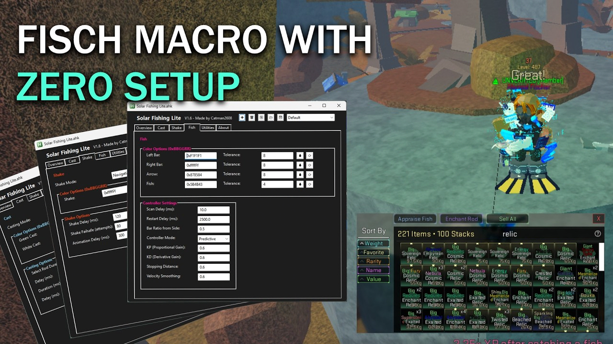

A lightweight Roblox Fisch fishing macro built for simplicity and long-term stability. Automates the core fishing process with a streamlined setup and fully transparent AutoHotkey source code.
Download Solar Fishing Lite, a lightweight Roblox fishing macro focused on reliable core fishing automation. Built with AutoHotkey for a simple, transparent, and stable experience with minimal setup required.
🔎 Fully transparent: The complete source code is available on GitHub for anyone who wants to review how it works.

Solar Fishing is a lightweight Roblox Fisch fishing macro built for simplicity and long-term stability, designed to provide reliable, hands-free fishing with no setup.
🚀 Downloading and using Solar Fishing Lite is straightforward.
Step 1: Download the Solar Fishing Lite .ahk script from the Downloads panel on the right.
Step 2: Double-click the .ahk file to launch Solar Fishing Lite.
Step 3: Open Roblox Fisch and click Detect Roblox in Solar Fishing Lite. Select your rod and configure your preferred settings.
That's it! Solar Fishing Lite will work perfectly.
✅ Supports Windows 10/11 • macOS • Linux • Works with all rods • Auto-updates available